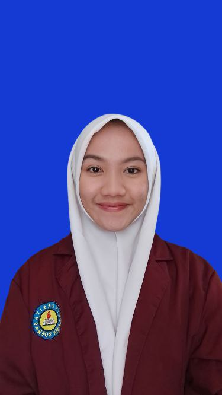

| Nama | : Amalia Faroha Sutardi |  |
| Nim | : 222511002 | |
| Prodi | : Bisnis Digital | |
| TTL | : Sumedang, 23 Oktober 2003 | |
| Agama | : Islam | |
| Alamat | : Jl. Melur 2 No 53, Bandung. | |
| No Telepon | : 083871258511 |
Saya adalah seorang mahasiswa bisnis digital semester 4 di Ma'soem University. Saya tertarik dengan bidang teknologi dan bisnis, dan saya percaya bahwa bisnis digital adalah masa depan yang menjanjikan. Saya selalu bersemangat untuk belajar hal-hal baru dan menggali lebih dalam tentang bagaimana teknologi dapat meningkatkan efisiensi dan inovasi dalam dunia bisnis. Di samping itu, saya juga aktif dalam berbagai kegiatan organisasi, ukm, dan komunitas di kampus maupun diluar kampus yang nantinya dapat membantu saya mengembangkan keterampilan kepemimpinan, public speaking, kolaborasi, dan lain-lain.